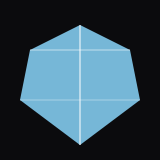

Astrological Gemstones by Zodiac Sign
占星の宝石は、古来より個のエネルギーと黄道十二宮を響き合わせる存在として尊ばれてきました。Aurex Gem House では、スリランカとタイで厳選し、鑑別書に対応した宝石のみを、稀少性と気品を備える逸品としてお届けします。あなたの星座に寄り添う守護石をお選びください。

牡羊座（3/21–4/19） — ダイヤモンド
ダイヤモンドは強さ・勇気・透明性を象徴します。自信とリーダーシップを高め、あらゆる場面で集中力と粘り強さを保てるよう導くと信じられています。

牡牛座（4/20–5/20） — エメラルド
エメラルドは英知・調和・成長の象徴。感情のバランスと繁栄を促し、明晰なコミュニケーションを支えることで、公私ともに着実な歩みを後押しするとされます。

双子座（5/21–6/20） — パール
パールは純粋・静穏・情緒の均衡を示します。心を鎮め、表現力を高め、好奇心旺盛な双子座に内なる安らぎをもたらすといわれます。

蟹座（6/21–7/22） — ルビー
ルビーは生命力・情熱・守護の石。情緒の安定と自信を強め、愛と前向きなエネルギーを引き寄せると伝えられています。

獅子座（7/23–8/22） — ペリドット
ペリドットは歓び・力・再生の象徴。豊かさを招き、ストレスを和らげ、獅子座本来のリーダーシップと気品を支えるとされます。

乙女座（8/23–9/22） — サファイア
サファイアは叡智・明晰・規律を示す宝石。集中力と直感を磨き、心を澄ませ、目標達成に向けた着実さをもたらすと信じられています。

天秤座（9/23–10/22） — オパール
オパールは創造性・調和・情緒の表現を象徴。愛を育み、人間関係の均衡を整え、天秤座の洗練された魅力を引き立てるといわれます。
蠍座（10/23–11/21） — トパーズ
トパーズは力・明晰・変容の石。情緒の安定と勇気ある守護をもたらし、成功と幸運を引き寄せると伝えられています。

射手座（11/22–12/21） — タンザナイト
タンザナイトは洞察・変容・霊性の成長を示す宝石。知恵と創造性を高め、冒険心あふれる射手座の高次の意識を拓くとされます。
山羊座（12/22–1/19） — ガーネット
ガーネットは安定・守護・志を象徴。自信と決断力を強め、規律ある山羊座の着実な成功を支えると信じられています。
水瓶座（1/20–2/18） — アメシスト
アメシストは平穏・直観・霊的な明晰さの象徴。心を鎮め、創造性を促し、情緒の調和をもたらすといわれます。
- 
魚座（2/19–3/20） — アクアマリン
アクアマリンは静謐・勇気・明晰を示す宝石。感情を和らげ、直観を強め、やわらかな自信を授けると信じられています。